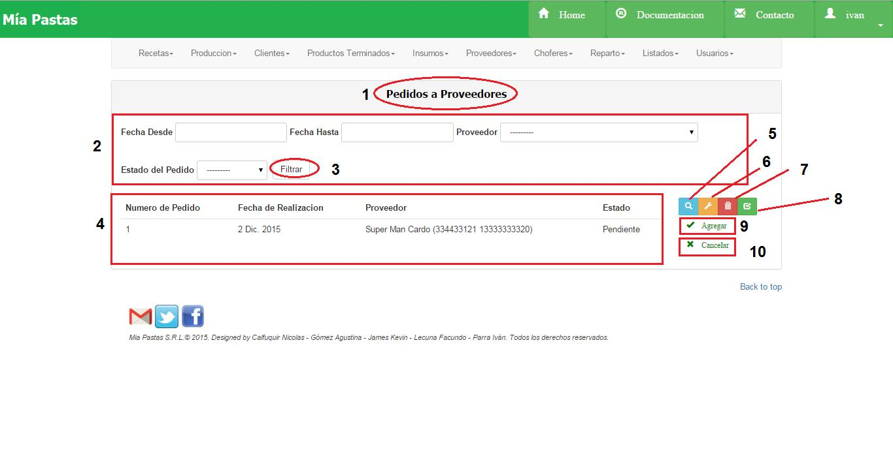
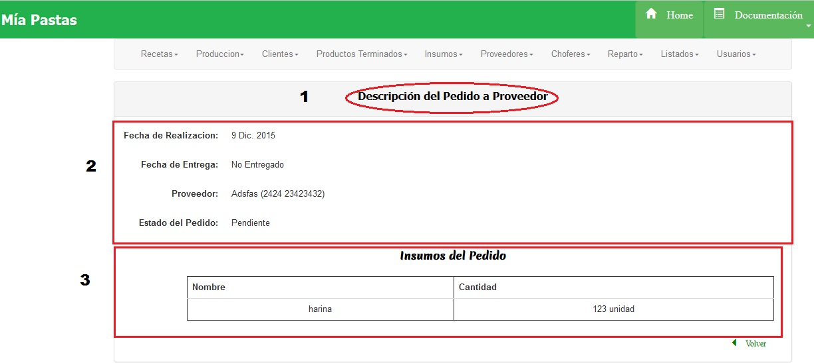
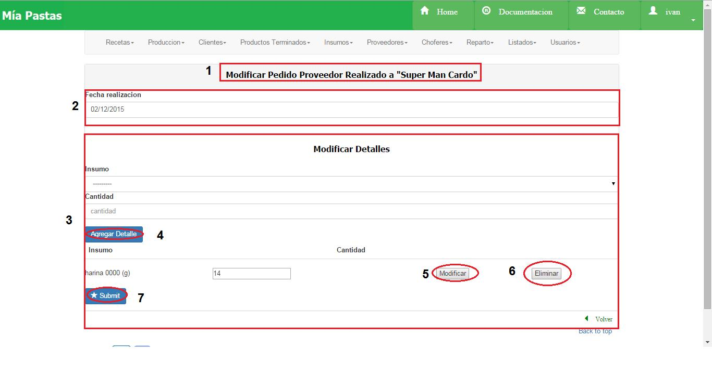
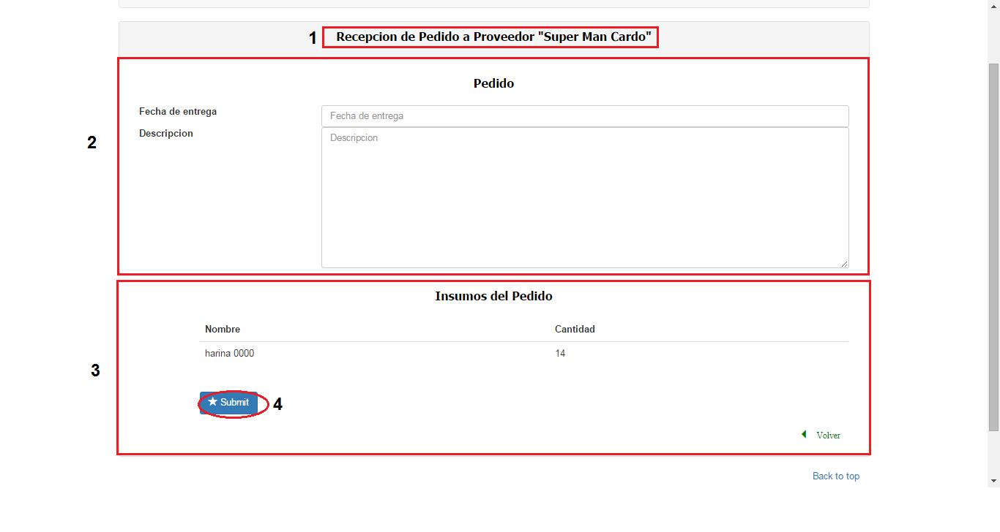
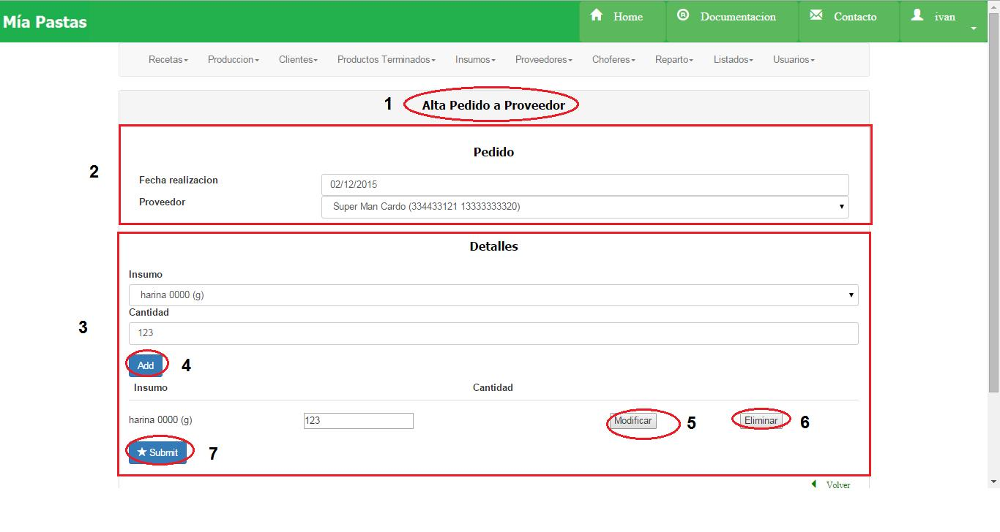
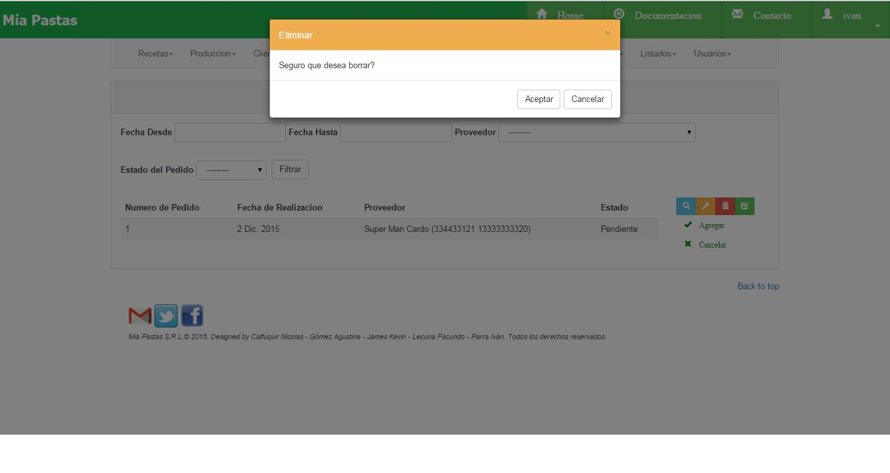

Proveedores¶
- Nombre de la sección donde estamos ubicados.
2. Es el sector de filtrado, se podrá filtrar por fecha desde, fecha hasta, proveedor y/o estado del pedido. Se filtrará presionando el botón (3). 4. Área de resultado del filtro donde se mostrará número de pedido, fecha de realización, proveedor y estado de los pedidos a proveedor filtrados. De no haberse realizado ningún filtro mostrará todos los proveedores existentes. 5. El icono de lupa sirve para mostrar más detalle sobre el ítem seleccionado. De no seleccionar previamente un ítem aparecerá un mensaje de error. 6. El icono de llave sirve para realizar una modificación sobre el ítem seleccionado. Para esto se deberá hacer click previamente sobre el ítem deseado. De no seleccionar previamente un ítem aparecerá un mensaje de error. 7. El icono del tacho de basura (2) sirve para eliminar un elemento seleccionado. Para esto se deberá hacer click previamente sobre el ítem que se desea eliminar (1). De no seleccionar previamente un ítem aparecerá un mensaje de error. 8. El icono del tilde (8) sirve para recepcionar un pedido seleccionado. Para esto se deberá hacer click previamente sobre el pedido que se desea recepcionar. De no seleccionar previamente un pedido aparecerá un mensaje de error. 9. Este botón permite abrir el formulario para dar de Alta un Nuevo Proveedor. 10. Este botón permite Cancelar el Pedido realizado a un proveedor. Para ello, debemos seleccionar el pedido y luego presionar el botón.
Consultar Pedido a Proveedores¶
Seleccionar un pedido a proveedor haciendo click sobre el deseado y sobre el ícono de lupa.
En (1) vemos la sección en la que estamos ubicados, en (2) vemos los datos del pedido seleccionado, y en (3) vemos el detalle del pedido, es decir, los insumos y cantidad pedidos.
Modificar Pedido a Proveedor¶
Seleccionar con un click el pedido a proveedor a modificar, luego hacer click sobre el ícono de modificar.
En (1) vemos la sección donde estamos ubicados. La sección (2) y (3) se corresponden al área de modificación, será obligatorio completar los campos que posean un asterisco (*). En la sección (2) podremos modificar la fecha de realización del pedido. En (3) podremos modificar el detalle del pedido, es decir, los insumos y cantidades solicitados. El botón (43) permite agregar un insumo como comercializado por el proveedor, mientras que el (6) permite eliminarlo. El botón (5) permite modificar la cantidad solicitada del insumo. El botón (7) permite guardar los cambios realizados.
Recepcionar Pedido a Proveedor¶
Seleccionar con un click el pedido a proveedor a recepcionar, luego hacer click sobre el ícono de recepcionar.
En (1) vemos la sección donde estamos ubicados. La sección (2) y (3) se corresponde al área de recepción, será obligatorio completar que posean un asterisco (*). En la sección (2) debemos ingresar la fecha de entrega y descripción del pedido, mientras que en (3) vemos los insumos que hemos pedido a ese proveedor. Al presionar el botón (4) se recepcionará el pedido, pasando al estado “Recibido” y actualizando el stock automáticamente de cada insumo.
Alta Pedido a Proveedor¶
(1) Nombre de la sección en la que nos ubicamos, (2) datos a completar del insumo a crear, (3) datos a completar de los insumos y cantidades del pedido, donde: • (4) permite agregar un insumo. • (5) permite modificar la cantidad de un insumo. • (6) permite eliminar un insumo del pedido. • (7) permite dar de alta al nuevo proveedor.
Eliminar Pedido a Proveedores¶
Seleccionar con click un pedido a proveedor y hacer click sobre el botón de eliminar. Aparecerá el siguiente cartel:
